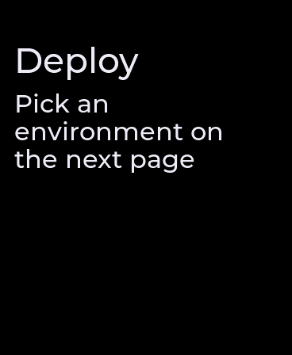

screen k=0 streamable
Screen — Full-screen root: a layout template + a column of children. The usual root of a push_screen tree.
| field | JSON key | type | notes |
|---|---|---|---|
| title | t | string | Screen title; rendered by the foundation/list/pinned layouts (suppressed when room chrome owns the title). |
| layout | lyt | uint | 0 = foundation (safe-area scrolling column, default), 1 = centered, 2 = list (sticky title + rows), 3 = pinned (scrolling content + fixed bottom CTA). |
| children | c | array | Child nodes, rendered top to bottom into the layout slot. |
{
"k": "screen",
"t": "Deploy",
"c": [
{
"k": "text",
"t": "Pick an environment on the next page"
}
]
}